{kind=link}

It follows MVT architecture(Model View Template)
Installation process:-
python -m venv <Virtual env name>
Activation Process:-
source ./<venv name>/bin/activate
and only then You should download django
pip install django
To check The downloaded libraries(only in python)
pip freeze
A django project may contain multiple project application, Which means a group of application and files is called as Django Project. An application is a part of Django Project.
djang-admin startproject projectname
projectname/ ← Outer Project Directory
│
├── manage.py ← Command-line utility for project management
│
└── projectname/ ← Inner Project Directory (same name as project)
├── __init__.py ← Initializes this directory as a Python package
├── settings.py ← Main configuration file
│ - Hosts, security settings, debug mode
│ - Installed apps
│ - Middleware
│ - Template and static directory settings
├── urls.py ← Declares root-level URL routes
├── wsgi.py ← WSGI entry point (for production servers)
└── asgi.py ← ASGI entry point (for async features)
Default
python manage.py runserver
To run it on a specific port:-
python manage.py runserver <port number>
django-admin startapp <appname>
as It's simple yet powerful, allowing HTML + Python-like logic inside templates.
Alternatives like Jinja2 can be used, but require additional configuration.
Basic Setup:
startproject, startapp).INSTALLED_APPS in settings.py.templates directory inside the app folder.app/templates/app_name/template.html.Using Views with Templates:
render(request, template_name, context) to pass data to templates.Variable Display in Templates:
{{ variable_name }} to display variables.Filters in Templates:
{{ name|lower }} → lowercase{{ name|upper }} → uppercase{{ name|truncatewords:3 }} → limit to 3 words{{ name|length }} → shows character count{{ name|default:"Guest" }} → default value if variable is emptyDate & Time Formatting:
{{ date_var|date:"D d M Y" }} for custom formats{{ time_var|time:"H:i" }} for timeshort_date_format and short_time_format available.Float Formatting (Monetary/Precision Control):
{{ price|floatformat:2 }} to round to 2 decimal placesConditionals: if, if-else, if-elif-else:
Then you have to declare it in the
settings.pyas an installed app and in thebase.htmlas{% load django_bootstrap5 %}
We have to use node
There's also a pip library which we can use
Then we have to init it as an app
and declare it in settings.py [old process]
npm install tailwindcss @tailwindcss/cli
@import "tailwindcss";
npx tailwindcss -i ./src/input.css -o ./src/output.css --watch
In url.py we set names to urls. We use them to create hyperlinks in the frontend
The process is to use "{% url '
it provides the interaction between the application and the database! alt text In django's orm it let's us write sql quaries in python
A model in Django is a Python class that represents a database table. It is the single, definitive source of information about your data. It contains the essential fields and behaviors of the data you're storing. Models define the structure of stored data, including field types, defaults, options, etc. Each model maps to a single database table.
val = Modelname.objects.all() # to get all
val = Modelname.objects.get(seatsching_parameter = "something") # to get filtered
python manage.py createsuperuser
A Django superuser is a special kind of user account that has full administrative access to all parts of your Django project — especially the Django admin panel.
from django.contrib import admin
from .models import Profile, Result
# Register your models here.
admin.site.register(Result)
class ProfileAdmin(admin.ModelAdmin):
list_display = ('id','name', 'roll', 'email', 'city')
search_fields = ('name', 'roll')
list_filter = ('city',)
admin.site.register(Profile, ProfileAdmin)
from django import forms
from .models import Profile, Result
class RegistrationForm(forms.Form):
name = forms.CharField(max_length=100, required=True)
roll = forms.IntegerField(required=True)
email = forms.EmailField(required=True)
city = forms.CharField(max_length=100, required=True)
def save(self):
profile = Profile(
name=self.cleaned_data['name'],
roll=self.cleaned_data['roll'],
email=self.cleaned_data['email'],
city=self.cleaned_data['city']
)
profile.save()
return profile
we can also show them as
- {{form.as_ul}} for ul
- {{form.as_table}} for table
- {{form.as_p}} for in p
- {{form.<tag name>}} for for specified input
Have done it before
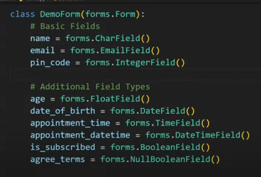
from django import forms
from django.core import validators
def check(value):
if value[0]!='s':
raise forms.ValidationError('Name should start with "s"')
class Registration (forms.Form):
name = forms.CharField(validators=[validators.
MaxLengthValidator (10), validators.MinLength Validator()])
email = forms. EmailField(validators =[check])
password = forms.CharField(widget=forms.Password Input)
from django import forms
from .models import <ModelName>
class RegistrationForm(forms.ModelForm):
class Meta:
model = <ModelName>
fields = ['<field1>', '<field2>'] # List of field names
labels = {
'<field_name>': 'Label you want to display',
}
error_messages = {
'<field_name>': {
'required': 'This field is required.',
'invalid': 'Enter a valid value.',
}
}
widgets = {
'name': forms.TextInput(attrs={
'class': 'your-css-class',
'placeholder': 'Your Placeholder'
}),
}
The form fields' data types are automatically inferred from the model fields.
For special fields:
ForeignKey → ModelChoiceFieldManyToManyField → ModelMultipleChoiceFieldYou can inherit from an existing form like this:
class NewForm(OldForm):
# Add or override fields here
packagename/
├── __init__.py # Declare it as a package
├── customfilter.py # Your custom filters go here
customfilter.py
from django import templates
register =template.Libarry()
def myreplace(value,arg):
return value.replace(arg ,'rplacing this word')
register.filter('customfiltername',myreplace)
{% load python_file_name %} # at the top of the file
{{data|customfiltername}}
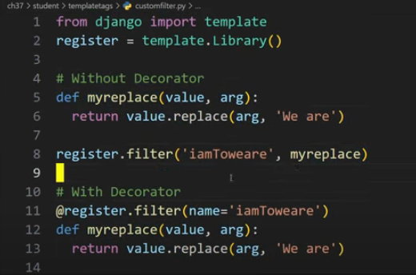
in the url file
from django.urls import path
from . import views
urlpatterns = [
path('dynamic/<int:pk>/', views.func_name, name='dynamic')
]
from django.shortcuts import render
def func_name(request, pk):
return render(request, 'htmlpage.html', {'pk_value': pk})
It is used at the time of debug and development at the time of production it is removed
from django.shortcuts import render
from django.contrib import messages
def home (request):
messages.add_message(request,messages.SUCCESS,'your custom message')
return render(request, 'student/home.html')
def registration (request):
return render(request, 'student/registration.html')
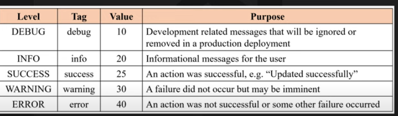
#Disclaimer:- Debug is usually set at level 10 and the default level is at 20 that's why it's doesn't show up at first That's why we have to set it by
messages.set_level(request,messages.DEBUG)
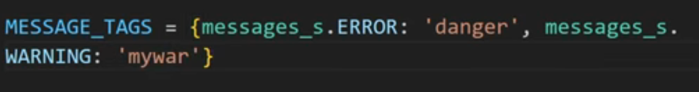
settings.py We can have custom tags too for css purposes
This project demonstrates user authentication and account management features using Django. Tailwind CSS is used for modern UI styling.
account app)account/ app: Handles user-related logic (models, views, forms, templates)templates/base.html: Main site template with navigation and content blocksday6/settings.py: Django settings for the projectmanage.py: Django management scriptdb.sqlite3: SQLite databaserequirements.txtpython manage.py migratepython manage.py runserverUser model inheriting from AbstractBaseUser with fields for email, first/last name, and flags for staff/superuser/seller/customer.UserManager to handle user and superuser creation, enforcing email uniqueness and password hashing.RegistrationForm to collect user info and passwords.LoginForm to validate credentials and authenticate users by email/password.ChangePasswordForm to verify old password and set a new one.urlsafe_base64_encode/decode and default_token_generator to securely generate and verify activation/reset tokens.send_async_email utility (threaded, uses Django's send_mail).urlsafe_base64_encode and decoded with urlsafe_base64_decode.# models.py
from django.db import models
from django.contrib.auth.models import AbstractBaseUser, BaseUserManager
class UserManager(BaseUserManager):
def create_user(self, email, password=None):
if not email:
raise ValueError('The Email field must be set')
user = self.model(email=self.normalize_email(email))
user.set_password(password)
user.save(using=self._db)
return user
def create_superuser(self, email, password=None, **extra_fields):
extra_fields.setdefault('is_staff', True)
extra_fields.setdefault('is_superuser', True)
user = self.create_user(email, password)
user.is_staff = True
user.is_superuser = True
user.save(using=self._db)
return user
class User(AbstractBaseUser):
email = models.EmailField(unique=True)
first_name = models.CharField(max_length=30, blank=True)
last_name = models.CharField(max_length=30, blank=True)
is_active = models.BooleanField(default=False)
is_staff = models.BooleanField(default=False)
is_superuser = models.BooleanField(default=False)
objects = UserManager()
USERNAME_FIELD = 'email'
# views.py
from django.utils.http import urlsafe_base64_encode, urlsafe_base64_decode
from django.utils.encoding import force_bytes, force_str
from django.contrib.auth.tokens import default_token_generator
from django.urls import reverse
from .utils import send_async_email
def register(request):
# ...
user = form.save(commit=False)
user.set_password(form.cleaned_data['password1'])
user.save()
uidb64 = urlsafe_base64_encode(force_bytes(user.pk))
token = default_token_generator.make_token(user)
activation_link = reverse('activate', kwargs={'uidb64': uidb64, 'token': token})
activation_url = f'{settings.SITE_DOMAIN}{activation_link}'
send_async_email('Activate Your Account', f'Click: {activation_url}', user.email)
# views.py
def login(request):
# ...
user = authenticate(email=email, password=password)
if user is not None:
auth_login(request, user)
return redirect('home')
# forms.py
class ChangePasswordForm(forms.Form):
old_password = forms.CharField(widget=forms.PasswordInput)
new_password1 = forms.CharField(widget=forms.PasswordInput)
new_password2 = forms.CharField(widget=forms.PasswordInput)
# ...
def save(self, commit=True):
self.user.set_password(self.cleaned_data['new_password1'])
if commit:
self.user.save()
return self.user
# views.py
def forgot_password(request):
# ...
user = User.objects.get(email=email)
uidb64 = urlsafe_base64_encode(force_bytes(user.pk))
token = default_token_generator.make_token(user)
reset_link = reverse('reset_password', kwargs={'uidb64': uidb64, 'token': token})
reset_url = f'{settings.SITE_DOMAIN}{reset_link}'
send_async_email('Reset Your Password', f'Click: {reset_url}', user.email)
# utils.py
import threading
from django.core.mail import send_mail
def send_async_email(subject, message, to_email):
threading.Thread(target=send_mail, args=(subject, message, None, [to_email])).start()
# views.py
def activate(request, uidb64, token):
uid = force_str(urlsafe_base64_decode(uidb64))
user = User.objects.get(pk=uid)
if default_token_generator.check_token(user, token):
user.is_active = True
user.save()
decoretors.py
from django.contrib.auth.decorators import login_required
from functools import wraps
from django.http import HttpResponseForbidden
def login_required_custom(required_role):
"""Decorator to enforce login and role-based access control.
Usage: @login_required_custom('customer') or @login_required_custom('seller')
"""
def decorator(view_func):
@login_required
@wraps(view_func)
def _wrapped_view(request, *args, **kwargs):
user = request.user
if required_role =="customer" and not user.is_customer:
return HttpResponseForbidden("You do not have permission to access this page.")
if required_role == "seller" and not user.is_seller:
return HttpResponseForbidden("You do not have permission to access this page.")
return view_func(request, *args, **kwargs)
return _wrapped_view
permissions.py
from products.models import Product
PERMISSION_CONFIG = {
'customer': {
Product:["view"]
},
'seller': {
Product:["view","add","change"]
},
}
utils.py
from django.contrib.auth.models import Permission
from django.contrib.contenttypes.models import ContentType
from products.models import Product
def assign_permissions(user, role):
"""Assign permissions to user based on their role."""
content_type = ContentType.objects.get_for_model(Product)
permissions = PERMISSION_CONFIG.get(role, {})
for model, perms in permissions.items():
for perm in perms:
permission = Permission.objects.get(
codename=f"{perm}_{model._meta.model_name}",
content_type=content_type
)
user.user_permissions.add(permission)
# views.py
from django.shortcuts import render, redirect
from django.contrib.auth.decorators import login_required
from .permissions import assign_permissions
from .models import User
def register(request):
if request.method == 'POST':
form = RegistrationForm(request.POST)
if form.is_valid():
user = form.save()
role = form.cleaned_data['role']
assign_permissions(user, role) # Assign permissions based on role
return redirect('login')
else:
form = RegistrationForm()
return render(request, 'account/register.html', {'form': form})
@login_required
def product_list(request):
if request.user.has_perm('products.view_product'):
products = Product.objects.all()
return render(request, 'products/product_list.html', {'products': products})
return HttpResponseForbidden("You do not have permission to view products.")
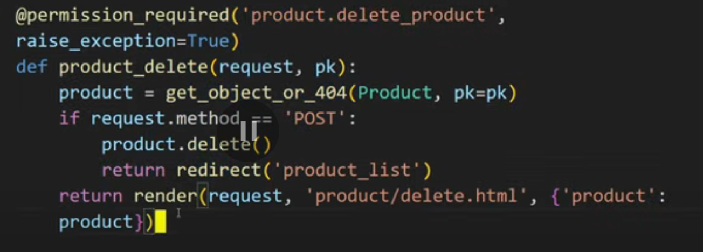
A cookie is a small piece of data stored on the user's computer by a server. It’s used to remember information about the user across multiple requests or visits to the site.
we send it like this-> 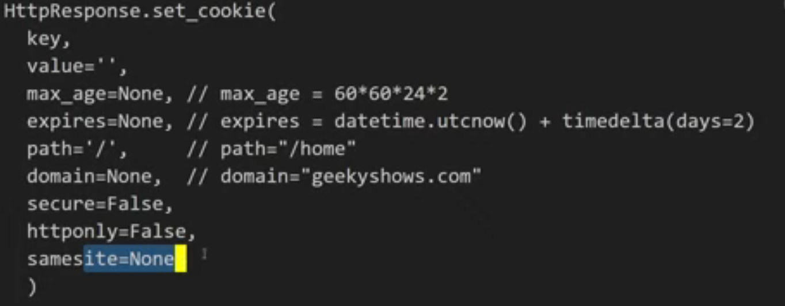
set-> 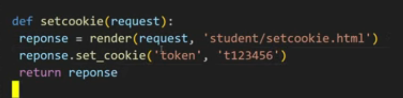 get-> 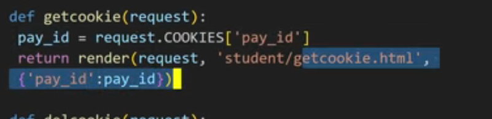 delete-> 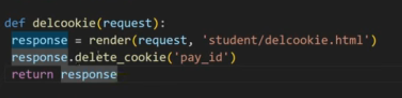
More secure-> signed cookies are more secure because they include a signature that verifies the integrity of the cookie data. This prevents tampering, as any changes to the cookie would invalidate the signature.
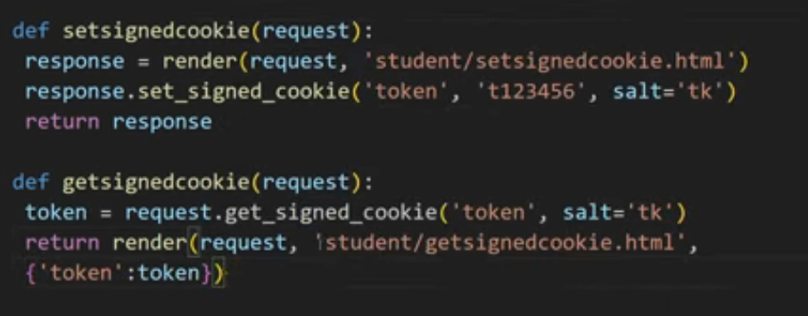
Django uses sessions to store data on the server side, allowing you to keep track of user interactions across requests. Sessions are typically stored in the database, cache, or file system.
important settings.py
# settings.py
INSTALLED_APPS = [
...
'django.contrib.sessions',
...
]
MIDDLEWARE = [
...
'django.contrib.sessions.middleware.SessionMiddleware',
...
]
SET->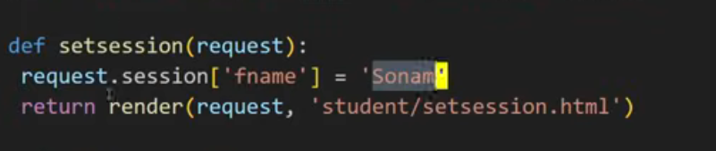 get->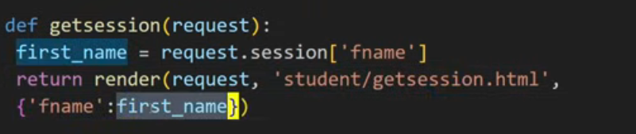 delete->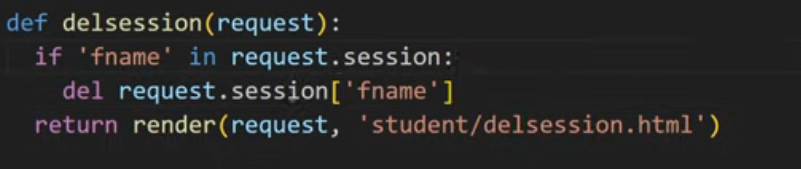 flush->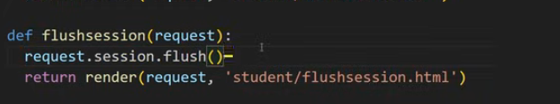 (used for clearing all session data/logout)
To enhance session security, you can configure settings like SESSION_COOKIE_SECURE, SESSION_EXPIRE_AT_BROWSER_CLOSE, and SESSION_COOKIE_AGE in your settings.py file. These settings help protect against session hijacking and ensure that sessions are only valid over secure connections.
# settings.py
SESSION_COOKIE_SECURE = True # Use secure cookies (HTTPS only)
SESSION_EXPIRE_AT_BROWSER_CLOSE = True # Expire session when browser closes
SESSION_COOKIE_AGE = 1209600 # Session duration in seconds (2 weeks)
Django can store session data in files by configuring the session engine in settings.py. This is useful for lightweight applications or when you want to avoid database overhead.
# settings.py
SESSION_ENGINE = 'django.contrib.sessions.backends.file'
SESSION_FILE_PATH = BASE_DIR /'sessions' # Specify the directory for session files
This will create session files in the specified directory, allowing you to manage session data without a database.
Django provides a caching framework to store frequently accessed data in memory, reducing database queries and improving performance. You can use various backends like Memcached, Redis, or the local memory cache. It helps in speeding up the application by storing data that is expensive to compute or retrieve.
UpdateCacheMiddleware and FetchFromCacheMiddleware).settings.py:MIDDLEWARE = [
'django.middleware.cache.UpdateCacheMiddleware',
...
'django.middleware.cache.FetchFromCacheMiddleware',
]
CACHES = {
'default': {
'BACKEND': 'django.core.cache.backends.db.DatabaseCache',
'LOCATION': 'django_cache',
'TIMEOUT': 60 * 5, # cache for 5 minutes
'OPTIONS': {
'MAX_ENTRIES': 1000, # maximum number of entries in cache
},
}
}
# Local memory cache
CACHES = {
'default': {
'BACKEND': 'django.core.cache.backends.locmem.LocMemCache',
'LOCATION': 'unique-snowflake',
'TIMEOUT': 60 * 5, # cache for 5 minutes
}
}
CACHE_MIDDLEWARE_SECONDS = 600 # cache for 10 minutes
python manage.py createcachetable # create cache table in database
Caches the entire output of a specific view.
More flexible than per-site caching.
No middleware needed.
Uses the @cache_page decorator.
There are two ways to use it:
a. In the view function:
from django.views.decorators.cache import cache_page
@cache_page(60 * 5)
def my_view(request):
...
b. In the URL configuration:
# urls.py
from django.urls import path
from .views import my_view
from django.views.decorators.cache import cache_page
urlpatterns = [
path('my-view/', cache_page(60 * 5)(my_view), name='my_view'),
]
Caches sections of templates.
Useful when only parts of a page are slow.
Syntax:
{% load cache %}
{% cache 300 some_key %}
... expensive HTML block ...
{% endcache %}
Caches arbitrary Python data (querysets, computations, etc.)
Uses the django.core.cache API:
from django.core.cache import cache
result = cache.get("expensive_query")
if result is None:
result = do_expensive_thing()
cache.set("expensive_query", result, timeout=300)
cache.add("new_key", "value", timeout=300) # Adds only if key doesn't exist
cache.delete("old_key") # Deletes a key from cache
cache.clear() # Clears the entire cache
cache.set_many({"key1": "value1", "key2": "value2"}, timeout=300) # Set multiple keys at once
cache.get_many(["key1", "key2"]) # Get multiple keys at once
cache.touch("key", timeout=600) # Update timeout of an existing key
cache.incr("counter") # Increment a numeric value in cache
cache.decr("counter") # Decrement a numeric value in cache
| Type | Scope | Example Use Case |
|---|---|---|
| Per-Site Caching | Entire site (all pages) | Blog or CMS with same content for all |
| Per-View Caching | One view function/class | Product listing or home page |
| Template Fragment | Part of a template | Sidebar, footer, or tag cloud |
| Low-Level Caching | Arbitrary data | Querysets, computations, external APIs |
It has 3 places to store cache:
django.core.cache.backends.db.DatabaseCache.django.contrib.sessions app.python manage.py createcachetable.django.core.cache.backends.filebased.FileBasedCache.settings.py with FILE_CACHE_DIR.django.core.cache.backends.locmem.LocMemCache.In Django, signals are a way to allow certain senders to notify a set of receivers when some action has taken place.
It has many types of signals. They are ->
pre_save: Sent just before a model's save() method is called.post_save: Sent just after a model's save() method is called.pre_delete: Sent just before a model's delete() method is called.post_delete: Sent just after a model's delete() method is called.pre_init: Sent just before a model's __init__() method is called.post_init: Sent just after a model's __init__() method is called.class_prepared: Sent when a model class is prepared.connection_created: Sent when a new database connection is created.connection_closed: Sent when a database connection is closed.request_started: Sent when a request is started.request_finished: Sent when a request is finished.got_request_exception: Sent when an exception is raised during request processing.user_logged_in: Sent when a user logs in.user_logged_out: Sent when a user logs out.user_password_changed: Sent when a user changes their password.user_login_failed: Sent when a user login attempt fails.pre_migrate: Sent before a migration is applied.post_migrate: Sent after a migration is applied.setting_changed: Sent when a setting is changed.template_rendered: Sent when a template is rendered.m2m_changed: Sent when a many-to-many relationship is changed.Signal class.Let's see how to use user signals
# signals.py
from django.contrib.auth.models import User
from django.contrib.auth.signals import user_logged_in, user_logged_out, user_login_failed
def login_success(sender,request, user, **kwargs):
print(f"User {user.username} logged in successfully.")
user_logged_in.connect(login_success,sender=User)
we can also use decorators to connect signals:
# signals.py
... #same headers as above
from django.dispatch import receiver
@receiver(user_logged_in, sender=User)
def login_success(sender, request, user, **kwargs):
print(f"User {user.username} logged in successfully.")
same work flow with user_logged_out, user_login_failed, etc.
Let's see how to use model signals
# signals.py
from django.db.models.signals import pre_save, post_save,pre_delete, post_delete,pre_init, post_init, class_prepared,pre_migrate, post_migrate
from django.dispatch import receiver
@receiver(pre_save, sender=MyModel)
def my_model_pre_save(sender, instance, **kwargs):
print(f"About to save {instance} of type {sender.__name__}")
@receiver(post_save, sender=MyModel)
def my_model_post_save(sender, instance, created, **kwargs):
if created:
print(f"Created new {instance} of type {sender.__name__}")
else:
print(f"Updated {instance} of type {sender.__name__}")
@receiver(pre_delete, sender=MyModel)
def my_model_pre_delete(sender, instance, **kwargs):
print(f"About to delete {instance} of type {sender.__name__}")
@receiver(post_delete, sender=MyModel)
def my_model_post_delete(sender, instance, **kwargs):
print(f"Deleted {instance} of type {sender.__name__}")
@receiver(pre_init, sender=MyModel)
def my_model_pre_init(sender, *args, **kwargs):
print(f"About to initialize {sender.__name__}")
@receiver(post_init, sender=MyModel)
def my_model_post_init(sender, instance, **kwargs):
print(f"Initialized {instance} of type {sender.__name__}")
@receiver(class_prepared, sender=MyModel)
def my_model_class_prepared(sender, **kwargs):
print(f"Class {sender.__name__} is prepared")
@receiver(pre_migrate)
def my_model_pre_migrate(sender, **kwargs):
print("About to apply migrations")
@receiver(post_migrate)
def my_model_post_migrate(sender, **kwargs):
print("Migrations applied successfully")
Let's see how to use request signals
# signals.py
from django.core.signals import request_started, request_finished, got_request_exception
from django.dispatch import receiver
@receiver(request_started)
def request_started_handler(sender, **kwargs):
print("Request has started")
@receiver(request_finished)
def request_finished_handler(sender, **kwargs):
print("Request has finished")
@receiver(got_request_exception)
def got_request_exception_handler(sender, request, **kwargs):
print(f"An exception occurred during request processing: {kwargs.get('exception')}")
Let's see how to use DB signals
# signals.py
from django.db.backends.signals import connection_created
from django.dispatch import receiver
@receiver(connection_created)
def connection_created_handler(sender, connection, **kwargs):
print(f"New database connection created: {connection.alias}")
You can create custom signals using Django's Signal class.
# signals.py
from django.dispatch import Signal, receiver
# Define a custom signal
notification_sent = Signal()
@receiver(notification_sent)
def send_notification(sender, **kwargs):
# Logic to send notification
print("Notification sent!")
print(f"Sender: {sender}, kwargs: {kwargs}")
# views.py
from myapp.signals import notification_sent
def some_view(request):
# Some logic
notification_sent.send(sender=request.user, message="Hello, World!")
# apps.py
from django.apps import AppConfig
class MyAppConfig(AppConfig):
name = 'myapp'
def ready(self):
import myapp.signals # Import the signals module to ensure signals are registered
# __init__.py
default_app_config = 'myapp.apps.MyAppConfig'
if u do not want to use init.py, you can add the app config directly in the settings.py file:
# settings.py
INSTALLED_APPS = [
...
'myapp.apps.MyAppConfig', # in place of 'myapp'
...
]
Signals are great for decoupling logic (e.g., don't clutter your views),
But overusing signals can make your codebase hard to debug and hard to follow, since logic is triggered “in the background.”
Signals are triggered when specific actions/events happen, especially in the models/auth layer. They're perfect for adding side effects without cluttering your main code.
Send Emails or Notifications Send a welcome email when a user registers (post_save on User).
Alert admin when an important model is updated.
@receiver(post_save, sender=User)
def welcome_email(sender, instance, created, **kwargs):
if created:
send_mail("Welcome!", "Thanks for joining.", to=[instance.email])
👥 2. Auto-create Related Models Automatically create a Profile when a new User is created.
@receiver(post_save, sender=User)
def create_user_profile(sender, instance, created, **kwargs):
if created:
Profile.objects.create(user=instance)
Clean Up Data When an object is deleted (post_delete), remove associated files or records.
Auth Tracking Log user login/logout events.
Trigger actions when login fails.
@receiver(user_logged_in)
def track_login(sender, user, request, **kwargs):
print(f"{user.username} just logged in")
Testing & Development Mock or track actions during automated tests.
Reset data when migrations are run (post_migrate).
Middlewares are a way to process requests globally before they reach the view or after the view has processed them. They can be used for various purposes such as logging, authentication, and more.
Middleware works for all requests, not just specific ones. It is applied to every request that comes into the Django application.(Womp womp😭)
| Feature | **Middleware** |
| ---------------- | ------------------------------------------------ |
| **Layer** | HTTP Request/Response cycle |
| **Trigger** | Every request/response |
| **Scope** | Global (affects all views/requests) |
| **Manual Call?** | Never called manually (auto-applied by Django) |
| **Best For** | Security, logging, request/response modification |
| Feature | **Signals** |
| ---------------- |
| **Layer** | Model or App event layer (database, login, etc.) |
| **Trigger** | Specific events like `post_save`, `user_logged_in`, etc. |
| **Scope** | Local to models or specific actions |
| **Manual Call?** | Also automatic, but must be explicitly connected |
| **Best For** | Side effects: emails, logging, cleanup, notifications |
| Role | Middleware | Signals |
| --------------------- | --------------------------------- | ---------------------------------------------------------- |
| Like a **toll booth** | Checks/modifies **every request** | Like a **doorbell** — only rings when an **event happens** |
# middlewares.py
def my_fun_middleware(get_response):
print("One-time configuration or initialization.")
def middleware(request):
# Code to be executed for each request before the view (and later middleware) are called.
print("Before the view")
response = get_response(request)
# Code to be executed for each request/response after the view is called.
print("After the view")
return response
return middleware
# settings.py
MIDDLEWARE = [
...
'myapp.middlewares.my_fun_middleware', # Add your middleware here
...
]
We can also use it for rendering templates, for example:
# middlewares.py
from django.shortcuts import render
def template_rendering_middleware(get_response):
def middleware(request):
response = get_response(request)
if response.status_code == 200 and 'text/html' in response['Content-Type']:
# Render a template for the response
return render(request, 'my_template.html', context={'data': 'Hello, World!'})
return response
return middleware
in this case, the logic in views.py will not be executed, and the template will be rendered directly from the middleware.
# middlewares.py
class MyMiddleware:
def __init__(self, get_response):
self.get_response = get_response
print("One-time configuration or initialization.")
def __call__(self, request):
# Code to be executed for each request before the view (and later middleware) are called.
print("Before the view")
response = self.get_response(request)
# Code to be executed for each request/response after the view is called.
print("After the view")
return response
def process_view(self, request, view_func, view_args, view_kwargs):
# Code to be executed before the view is called.
print("Processing view")
return None # Return None to continue processing the view
def process_exception(self, request, exception):
# Code to handle exceptions raised by the view.
print(f"Exception occurred: {exception}")
return None # Return None to continue processing the exception
def process_template_response(self, request, response):
# Code to modify the response before rendering the template.
print("Processing template response")
response.context_data['additional_data'] = 'Some additional data'
return response # Return the modified response
# settings.py
MIDDLEWARE = [
...
'myapp.middlewares.MyMiddleware', # Add your middleware here
...
]
Middleware sits between the request and the view, and between the view and the response. It’s ideal for things that apply to every request or every response.
Enforce HTTPS (redirect HTTP to HTTPS).
Add security headers (like X-Frame-Options, Content-Security-Policy).
class BlockIPMiddleware:
def __call__(self, request):
if request.META['REMOTE_ADDR'] in ['192.168.1.1']:
return HttpResponseForbidden("Blocked")
Logging & Debugging Log every incoming request and outgoing response.
Track performance or API usage stats.
Request/Response Modification Automatically add headers or cookies.
Attach metadata or custom attributes to the request before it hits your view.
Session & Authentication Custom middleware for session-based access control.
Inject user data globally into all views.
The order of middleware matters! Django processes them in the order they are listed in
MIDDLEWAREsetting. If one middleware modifies the request, the next one will see that modification.
The oder is like this:
Middleware1(init) -> Middleware2(init) -> Middleware1(call) -> Middleware2(call) -> View -> Middleware2(response) -> Middleware1(response)
Although you can still make it accessable to speciied users only, by checking the request.user in the middleware:
# middlewares.py
from django.http import HttpResponseForbidden
class UserSpecificMiddleware:
def __call__(self, request):
if request.user.is_staff:
return self.get_response(request)
else:
return render(request, 'not_allowed.html')
We can also use some restricted key by which anyone can access the site like this:
# middlewares.py
from django.http import HttpResponseForbidden
from django.conf import settings
class RestrictedAccessMiddleware:
def __call__(self, request):
unk = "key" # replace with your key
if 'u' in request.GET and request.GET['u'] == unk:
return self.get_response(request)
else:
return render(request, 'not_allowed.html')
The user can access the site by using the key like this:
http://example.com/?u=key
get all:- Modelname.objects.all() all data but filtered :- ModelName.objects.filter(field=value) get one object:- ModelName.objects.get(field=value) get one object or return None:- ModelName.objects.filter(field=value).first() exclude :- ModelName.objects.exclude(field=value) count :- ModelName.objects.count() order by :- ModelName.objects.order_by('field') # ascending order by descending :- ModelName.objects.order_by('-field') random :- ModelName.objects.order_by('?') distinct :- ModelName.objects.distinct() upto some number of objects :- ModelName.objects.order_by('field')[:10] to get only some fields :- ModelName.objects.values('field1', 'field2')
to see the SQL query generated by a queryset, you can use the query attribute:
queryset = ModelName.objects.filter(field=value)
print(queryset.query)
union of two querysets:
queryset1 = ModelName.objects.filter(field1=value1)
queryset2 = ModelName.objects.filter(field2=value2)
combined_queryset = queryset1.union(queryset2)
# to allow duplicates
combined_queryset = queryset1.union(queryset2, all=True)
intersection of two querysets:
queryset1 = ModelName.objects.filter(field1=value1)
queryset2 = ModelName.objects.filter(field2=value2)
intersection_queryset = queryset1.intersection(queryset2)
difference of two querysets:
queryset1 = ModelName.objects.filter(field1=value1)
queryset2 = ModelName.objects.filter(field2=value2)
difference_queryset = queryset1.difference(queryset2)
And and Or operations:
# AND operation
queryset = ModelName.objects.filter(field1=value1) & ModelName.objects.filter(field2=value2)
queryset = ModelName.objects.filter(field1=value1,field2=value2)
# OR operation
queryset = ModelName.objects.filter(field1=value1) | ModelName.objects.filter(field2=value2)
get might get multiple objects if the filter is not unique, causing an error, so use it with caution.
first and last:
first_object = ModelName.objects.first() # Get the first object
last_object = ModelName.objects.last() # Get the last object
we can also do it with other querysets:
first_object = ModelName.objects.filter(field=value).first() # Get the first object matching the filter
object_2 = ModelName.objects.order_by('field').last() # Get the last object ordered by 'field'
latest
latest_object = ModelName.objects.latest('pass_date')
Note:
latest()requires a field to order by, typically a date or timestamp field. in this case, it ispass_date. the model must have a field somthing like thispass_date = models.DateTimeField(auto_now_add=True)
earliest
earliest_object = ModelName.objects.earliest('pass_date')
Note:
earliest()also requires a field to order by, similar tolatest(). it ispass_datein this case.
Create Data
# Create a new object
new_object = ModelName.objects.create(field1=value1, field2=value2)
This will create a new object in the database and return the created object.
get_or_create
# Get an object if it exists, otherwise create it
obj, created = ModelName.objects.get_or_create(field1=value1, defaults={'field2': value2})
get_or_createreturns a tuple of the object and a boolean indicating whether it was created or not. Thedefaultsargument allows you to specify additional fields to set if the object is created.
update
# Update existing objects
ModelName.objects.filter(field1=value1).update(field2=value2)
This will update all objects matching the filter with the new value for
field2.
bulk_create
# Bulk create multiple objects
objects_to_create = [
ModelName(field1=value1, field2=value2),
ModelName(field1=value3, field2=value4),
]
ModelName.objects.bulk_create(objects_to_create)
bulk_createallows you to create multiple objects in a single query, which is more efficient than creating them one by one.
Django provides a powerful way to filter querysets using field lookups. These lookups allow you to perform various types of queries on your models. Here are some common field lookups:
ModelName.objects.filter(field__exact=value)
ModelName.objects.filter(field__iexact=value)
ModelName.objects.filter(field__contains=value)
ModelName.objects.filter(field__icontains=value)
ModelName.objects.filter(field__in=[value1, value2, value3])
ModelName.objects.filter(field__gt=value)
ModelName.objects.filter(field__gte=value)
ModelName.objects.filter(field__lt=value)
ModelName.objects.filter(field__lte=value)
ModelName.objects.filter(field__startswith=value)
ModelName.objects.filter(field__istartswith=value)
ModelName.objects.filter(field__endswith=value)
ModelName.objects.filter(field__iendswith=value)
ModelName.objects.filter(field__range=(start_value, end_value))
ModelName.objects.filter(field__isnull=True) # or False
ModelName.objects.filter(field__date=date_value)
ModelName.objects.filter(field__year=year_value)
ModelName.objects.filter(field__year__gt=year_value) # greater than
ModelName.objects.filter(field__month=month_value)
from django.db.models import Avg
data = ModelName.objects.all()
average = data.aggregate(Avg('field'))
from django.db.models import Count
data = ModelName.objects.all()
count = data.aggregate(Count('field'))
from django.db.models import Max
data = ModelName.objects.all()
max_value = data.aggregate(Max('field'))
from django.db.models import Min
data = ModelName.objects.all()
min_value = data.aggregate(Min('field'))
from django.db.models import Sum
data = ModelName.objects.all()
total = data.aggregate(Sum('field'))
from django.db.models import Q
students = Student.objects.filter(
Q(name__icontains='john') | Q(age__gte=18)
)
This will return all students whose name contains 'john' or whose age is greater than or equal to 18. You can also use
&for AND operations and~for NOT operations:
students = Student.objects.filter(
Q(name__icontains='john') & ~Q(age__lt=18)
)
This will return all students whose name contains 'john' and whose age is not less than 18.
from django.db.models import Q
students = Student.objects.filter(
~Q(id__in=[1, 2, 3]) & Q(name__icontains='john')
)
This will return all students whose name contains 'john' and whose id is not in the list [1, 2, 3].
This example demonstrates how to use model inheritance in Django. Model inheritance allows you to create a base model that can be extended by other models, enabling code reuse and a cleaner design.
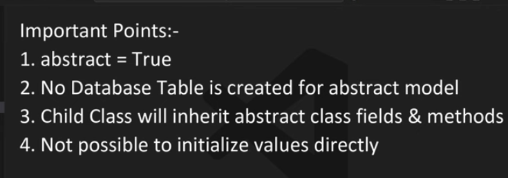
Abstract base classes are used when you want to define common fields and methods that can be inherited by other models, but you do not want to create a database table for the base class itself. Instead, only the child classes will have their own database tables.
# models.py
from django.db import models
# Model Inheritance Example
class BaseModel(models.Model):
name = models.CharField(max_length=100)
age = models.IntegerField()
joined_date = models.DateField()
class Meta:
abstract = True
class Student(BaseModel):
fees = models.DecimalField(max_digits=10, decimal_places=2)
joined_date = None # Overriding the joined_date field to None
class Teacher(BaseModel):
salary = models.DecimalField(max_digits=10, decimal_places=2)
class Contractor(models.Model):
payment = models.DecimalField(max_digits=10, decimal_places=2)
Multi-table inheritance is used when you want to create a base model that has its own database table, and each child model will also have its own table that includes a foreign key to the base model. This allows you to query the base model and get all related child models.
# models.py
from django.db import models
# Model Inheritance Example
class ExamCenter(models.Model):
center_name = models.CharField(max_length=100)
center_city = models.CharField(max_length=100)
class Student(ExamCenter):
name = models.CharField(max_length=100)
roll_number = models.CharField(max_length=20)
Proxy models are used when you want to change the behavior of a model without changing its fields or its database table. This is useful for adding custom methods or changing the default ordering of a model.
# models.py
from django.db import models
# Model Inheritance Example
class BaseModel(models.Model):
name = models.CharField(max_length=100)
class Student(BaseModel):
class Meta:
proxy = True
ordering = ['name']
In Django, a model manager is a class that manages database query operations for a model. It provides methods to retrieve and manipulate data in the database. You can create custom managers to add specific query methods that are not provided by the default manager.
# managers.py
from django.db import models
# Custom Manager Example
class CustomManager(models.Manager):
def get_queryset(self):
return super().get_queryset().filter(is_active=True) # Example filter for active records
def custom_method(self):
return self.get_queryset().filter(is_active=True) # Custom method to filter active records
# models.py
from django.db import models
from .managers import CustomManager
# Model Manager Example
class Student(models.Model):
name = models.CharField(max_length=100)
active = models.BooleanField(default=True)
objects = CustomManager()
custom_objects = models.Manager() # Default manager
To use the custom manager in your views or other parts of your application, you can call the custom methods defined in the manager. For example:
# views.py
from django.shortcuts import render
from .models import Student
def student_list(request):
students = Student.objects.custom_method()
return render(request, 'student_list.html', {'students': students})
def student_active_list(request):
active_students = Student.custom_objects.filter(is_active=True)
return render(request, 'active_student_list.html', {'students': active_students})
Django provides several types of relationships between models, allowing you to define how models are related to each other. The most common types of relationships are:
A one-to-one relationship is used when you want to create a unique link between two models. This is useful for extending a model with additional fields without creating a separate table.
# models.py
from django.db import models
# One-to-One Relationship Example
class User(models.Model):
username = models.CharField(max_length=100)
class Profile(models.Model):
user = models.OneToOneField(User, on_delete=models.CASCADE,primary_key=True)
bio = models.TextField()
location = models.CharField(max_length=100)
So here, the
Profilemodel has a one-to-one relationship with theUsermodel, meaning each user can have only one profile and each profile belongs to only one user. So if anything happens(as mentionedDELETE) toUserobject related toprofileThe profile one will also change. but if anything happens with the profile it will not happen in the user.
The behavioural options are ->
A many-to-one relationship is used when you want to create a link between two models where one model can be related to multiple instances of another model. This is typically done using a foreign key.
# models.py
from django.db import models
# Many-to-One Relationship Example
class Author(models.Model):
name = models.CharField(max_length=100)
class Book(models.Model):
title = models.CharField(max_length=100)
author = models.ForeignKey(Author, on_delete=models.CASCADE, related_name='books')
In this example, the
Bookmodel has a foreign key to theAuthormodel, meaning each book can have only one author, but an author can have multiple books. Therelated_nameattribute allows you to access the related books from the author instance. It has same behavioural options as mentioned above in the one-to-one relationship.
A many-to-many relationship is used when you want to create a link between two models where each model can be related to multiple instances of the other model. This is typically done using a many-to-many field.
# models.py
from django.db import models
# Many-to-Many Relationship Example
class Student(models.Model):
name = models.CharField(max_length=100)
class Course(models.Model):
name = models.CharField(max_length=100)
students = models.ManyToManyField(Student, related_name='courses')
here related name allows you to access the related courses from the student instance. Without it, you would have to use the default related name which is
course_setfor theCoursemodel.
# Usage Example
student = Student.objects.get(id=1)
courses = student.courses.all() # Accessing related courses from the student instance
Context processors are functions that take a request object and return a dictionary of context data that will be added to the context of every template rendered with the request. They are used to make certain data available globally in templates without having to pass it explicitly in every view.
# context_processors.py
def cart_items(request):
cart_items = request.session.get('cart_items', 0) # Example: Get cart items from session
return {'cart_items': cart_items} # Return a dictionary with the context data
# settings.py
TEMPLATES = [
{
'BACKEND': 'django.template.backends.django.DjangoTemplates',
'DIRS': [],
'APP_DIRS': True,
'OPTIONS': {
'context_processors': [
'django.template.context_processors.debug',
'django.template.context_processors.request',
'django.contrib.auth.context_processors.auth',
'django.contrib.messages.context_processors.messages',
# Add your custom context processor here
'yourapp.context_processors.cart_items',
],
},
},
]
# views.py
from django.shortcuts import render
def home(request):
return render(request, 'home.html') # The context processor will automatically add 'cart_items' to the context
| Use case | Why use a context processor? |
| -------------------------------------- | -------------------------------------------- |
| 🛒 Cart item count (like your example) | Show cart count in navbar on every page |
| 👤 Logged-in user profile info | Display user's name or avatar in header |
| 🌐 Current site settings | Site name, footer copyright, etc. |
| 🔔 Global messages/notifications | Unread notifications in nav |
| 📊 App-wide stats | Number of active users, trending posts, etc. |
| 🎨 Theme/branding settings | Dynamic colors, layout mode |
| 🌍 Language or timezone | For internationalization |
ASGI (Asynchronous Server Gateway Interface) is a specification that allows for asynchronous communication between web servers and web applications. It is designed to handle asynchronous protocols like WebSockets, HTTP/2, and HTTP/3, making it suitable for modern web applications that require real-time communication.
pip install daphne
run the following command to start the ASGI server:
daphne -p 8000 myproject.asgi:application
to run it by runserver command
#settings.py
INSTALLED_APPS = [
'daphne',
...
]
...
ASGI_APPLICATION = 'myproject.asgi.application'
python manage.py runserver --asgi
pip install uvicorn
run the following command to start the ASGI server:
uvicorn myproject.asgi:application --host=0.0.0.0 --port=8000
Django supports asynchronous views, which allow you to write views that can handle requests asynchronously. This is useful for improving the performance of your application, especially when dealing with I/O-bound operations like database queries or external API calls.
# views.py
from django.http import JsonResponse
async def async_view(request):
return JsonResponse({'message': 'This is an async view'})
to call http request from server use
httpxlibrary
pip install httpx
```python
# views.py
import httpx
async def async_view(request):
async with httpx.AsyncClient() as client:
response = await client.get('https://jsonplaceholder.typicode.com/photos')
return JsonResponse({'data': response.json()})
```
import time
import asyncio
import httpx
from django.http import JsonResponse
async def async_view(request):
start_time = time.time()
async with httpx.AsyncClient() as client:
tasks = [client.get("https://jsonplaceholder.typicode.com/posts") for _ in range(5)]
responses = await asyncio.gather(*tasks)
end_time = time.time()
time_taken = end_time - start_time
return JsonResponse({
'status': 'success',
'total_request': 5,
'time_taken': f"{time_taken:.2f} seconds",
'responses': [response.json() for response in responses]
})
asyncio is a Python library that provides support for asynchronous programming. It allows you to write concurrent code using the async/await syntax, making it easier to handle I/O-bound operations without blocking the main thread.
Django provides utilities to convert synchronous code to asynchronous and vice versa. This is useful when you need to call synchronous code from an asynchronous context or when you need to call asynchronous code from a synchronous context.
# sync_to_async
from asgiref.sync import sync_to_async, async_to_sync
from django.shortcuts import render
def get_data():
# Synchronous function to get data
return {'data': 'This is synchronous data'}
async def async_view(request):
# Convert synchronous function to asynchronous
data = await sync_to_async(get_data)()
return render(request, 'async_view.html', {'data': data})
# async_to_sync
async def async_get_data():
# Asynchronous function to get data
return {'data': 'This is asynchronous data'}
def sync_view(request):
# Convert asynchronous function to synchronous
data = async_to_sync(async_get_data)()
return render(request, 'sync_view.html', {'data': data})
without defining a helper function we can still use
sync_to_asyncandasync_to_syncdirectly in the view functions.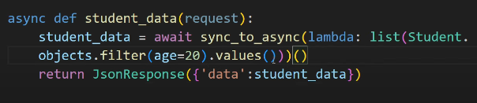
In runserver the static files are served. But in case of daphne and uvicorn the static files are not served by default.
# asgi.py
...
from django.contrib.staticfiles.handlers import ASGIStaticFilesHandler
application = ASGIStaticFilesHandler(
get_asgi_application()
)
# settings.py
...
STATIC_ROOT = BASE_DIR / "static"
# urls.py
...
from django.contrib.staticfiles.urls import staticfiles_urlpatterns
...
if settings.DEBUG:
urlpatterns += static(settings.STATIC_URL, document_root=settings.STATIC_ROOT)
# collect static files
python manage.py collectstatic
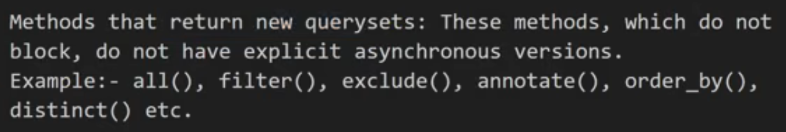
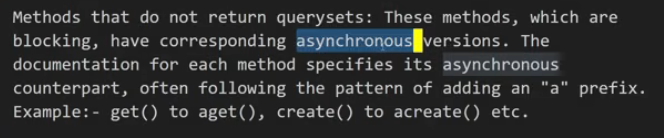
Asynchronous ORM for Django, which allows you to use Django's ORM in an asynchronous context. It is built on top of Django's ORM and provides a simple and easy-to-use interface for working with databases in an asynchronous way. The available methods are:
acount(): Returns the number of objects matching the query.aget(): Returns a single object matching the query.afirst(): Returns the first object matching the query.alast(): Returns the last object matching the query.aexists(): Returns True if the query has any results, False otherwise.aget_or_create(): Returns a single object matching the query, or creates it if it does not exist.aget_or_none(): Returns a single object matching the query, or None if it does not exist.alatest(): Returns the last object matching the query.aearliest(): Returns the first object matching the query.aexplains(): Returns a list of objects matching the query.aiterate(): Returns an asynchronous iterator over the objects matching the query.aprefetch_related(): Prefetches related objects for the query.abulk_create(): Creates multiple objects in bulk.abulk_update(): Updates multiple objects in bulk.abulk_delete(): Deletes multiple objects in bulk.aupdate(): Updates the objects matching the query.adelete(): Deletes the objects matching the query.# Example
from django.http import JsonResponse
from myapp.models import MyModel
async def home(request):
result = MyModel.objects.all()
async for obj in result:
print(obj)
await MyModel.objects.acreate(name="New Object", value=42)
data = [{"id": obj.id, "name": obj.name, "value": obj.value} for obj in result]
hello = await MyModel.objects.aget(pk=1)
await hello.adelete()
return JsonResponse(data, safe=False)
In django, middleware is a way to process requests globally before they reach the view or after the view has processed them. now by default, middleware is synchronous, but you can create asynchronous middleware by using decorators.
# Example
from django.http import JsonResponse
from django.utils.decorators import sync_and_async_middleware,sync_only_middleware,async_only_middleware
@sync_only_middleware
def my_sync_middleware(get_response):
def middleware(request):
# Do something before the view is called
response = get_response(request)
# Do something after the view is called
return response
return middleware
@async_only_middleware
async def my_async_middleware(get_response):
async def middleware(request):
# Do something before the view is called
response = await get_response(request)
# Do something after the view is called
return response
return middleware
@sync_and_async_middleware
async def my_middleware(get_response):
async def middleware(request):
if iscoroutinefunction(get_response):
# If get_response is an async function
response = await get_response(request)
else:
# If get_response is a sync function
response = get_response(request)
return response
return middleware
now sync_and_async_middleware is a decorator that allows you to create middleware that can handle both synchronous and asynchronous requests. it checks the type using iscoroutinefunction and calls the appropriate function accordingly.
It is said that one should not use sync_and_async_middleware in production, as it can lead to performance issues. Instead, you should use either sync_only_middleware or async_only_middleware depending on your use case.
from asyncio import iscoroutinefunction
from django.utils.asyncio import markcoroutinefunction
class MyMiddleware:
def __init__(self, get_response):
self.get_response = get_response
# Adapt self.async_capable based on the type of get_response
if iscoroutinefunction(get_response):
# If get_response is an async function, mark this middleware as async
markcoroutinefunction(self)
self.async_capable = True
self.sync_capable = False
else:
# If get_response is a sync function, this middleware is sync
self.async_capable = False
self.sync_capable = True
async def __call__(self, request):
# Logic before the view is called
response = await self.get_response(request)
# Logic after the view is called
return response
class-based views in Django are a way to organize your views in a more structured way. They allow you to define your views as classes, which can make your code more reusable and easier to maintain.
# views.py
from django.views import View
from django.http import JsonResponse
class MyView(View):
def get(self, request):
data = {"message": "Hello, world!"}
return JsonResponse(data)
def post(self, request):
data = {"message": "Hello, world!"}
return JsonResponse(data, status=201)
# urls.py
from django.urls import path
from .views import MyView
urlpatterns = [
path('my-view/', MyView.as_view(), name='my_view'),
]
to access the views like /my-view/id:int you can use the get method in the class-based view.
# views.py
from django.views import View
from django.http import JsonResponse
from myapp.models import MyModel
class MyView(View):
def get(self, request, id):
obj = MyModel.objects.get(pk=id)
data = {"message": obj.name}
return JsonResponse(data)
# urls.py
from django.urls import path
from .views import MyView
urlpatterns = [
path('my-view/<int:id>/', MyView.as_view(), name='my_view'),
]
class MyView(View):
def get(self, request, *args, **kwargs):
id = self.kwargs.get('id')
return JsonResponse({
"status": "success",
"message": f"Class view accessed with id: {id}"
})
def post(self, request, *args, **kwargs):
id = self.kwargs.get('id')
return JsonResponse({
"status": "success",
"message": "Post request received",
"data": {"id": id}
})
Template views are a way to render templates in Django using class-based views. They provide a simple way to render templates without having to write a lot of boilerplate code.
# urls.py
from django.urls import path
from django.views.generic import TemplateView
urlpatterns = [
path('template-view/', TemplateView.as_view(template_name='myapp/template.html'), name='template_view'),
]
We can also do it using views.py
# views.py
from django.views.generic import TemplateView
class MyTemplateView(TemplateView):
template_name = 'myapp/template.html'
def get_context_data(self, **kwargs):
context = super().get_context_data(**kwargs)
context['message'] = 'Hello, world!'
return context
Redirect views are a way to redirect users to a different URL in Django using class-based views.
# urls.py
from django.urls import path
from django.views.generic import RedirectView
urlpatterns = [
path('redirect-view/', RedirectView.as_view(url='/new-url/'), name='redirect_view'),
path('new-url/', TemplateView.as_view(template_name='myapp/template.html'), name='new_url'),
path('old-url/', RedirectView.as_view(pattern_name='new_url'), name='old_url'),
]
# views.py
from django.views.generic import RedirectView
class MyRedirectView(RedirectView):
url = '/new-url/'
permanent = False # Set to True for a permanent redirect (HTTP 301)
Generic class-based views are a way to create views that handle common tasks in Django, such as displaying a list of objects, creating a new object, updating an existing object, or deleting an object. Django provides several built-in generic class-based views that you can use to quickly create these views.
The ListView is used to display a list of objects from a model. It inherits from the MultipleObjectMixin,templateresponsemixin and baseview, MultipleObjectMixin,View classes.` and provides pagination support.
# views.py
from django.views.generic.list import ListView
from myapp.models import MyModel
class MyListView(ListView):
model = MyModel
Default template name for ListView is
<model_name>_list.html. For example, if your model isMyModel, the default template will bemymodel_list.html. Also the context variable will be<ModelName>_listby default.
# views.py
from django.views.generic.list import ListView
from myapp.models import MyModel
class MyListView(ListView):
model = MyModel
template_name_suffix = 'all' # to change the default template name's suffix
context_object_name = 'my_objects'
ordering = ['name']
class MyListView2(ListView):
model = MyModel
template_name = 'myapp/my_list.html'
context_object_name = 'my_objects' # to change the context name
# to customize the list query
def get_queryset(Self):
return MyModel.objects.filter(name__startswith='A')
# to add more context
def get_context_data(self, **args, **kwargs):
context = super().get_context_data(**args, **kwargs)
context['message'] = 'Hello, world!'
return context
The DetailView is used to display a single object from a model.
# view.py
from django.views.generic.detail import DetailView
from myapp.models import MyModel
class MyDetailView(DetailView):
model = MyModel
Default template name for DetailView is
<model_name>_detail.html. The get field ispkby default.
# urls.py
from .views import MyDetailsView
urlpatterns =[
path('object/<int:pk>/', MyDetailView.as_view(), name='my_detail')
]
to change that:-
from django.views.generic.detail import DetailView
from myapp.models import MyModel
class MyDetailView(DetailView):
model = MyModel
pk_url_kwarg = 'my_id'
template_name = 'myapp/my_detail.html'
context_object_name = 'my_object'
# template_suffix = '_custom'
def get_context_data(self,**args,**kwargs):
context = super().get_context_data(**args,**kwargs)
context['message'] = 'Hello, world!'
return context
The FormView is used to display a form and handle form submission. It inherits from the FormMixin and BaseView classes.
# views.py
from django.views.generic.edit import FormView
from myapp.forms import MyForm
from myapp.models import MyModel
class MyFormView(FormView):
template_name = 'myapp/my_form.html'
form_class = MyForm
success_url = '/success/' # URL to redirect after successful form submission
def form_valid(self, form):
# Logic to handle the form submission
form_data = form.cleaned_data
MyModel.objects.create(**form_data)
# For example, save the form data or send an email
return super().form_valid(form)
Default template name for FormView is
<form_class_name>_form.html. For example, if your form class isMyForm, the default template will bemyform_form.html.
# urls.py
from .views import MyFormView
urlpatterns = [
path('form/', MyFormView.as_view(), name='my_form'),
]
The CreateView is used to create a new object in the database. It inherits from the SingleObjectTemplateMixin, TemplateResponseMixin, and BaseCreateView classes.
# views.py
from django.views.generic.edit import CreateView
from myapp.models import MyModel
from myapp.forms import MyForm
class MyCreateView(CreateView):
model = MyModel
fields = ['name', 'value'] # Fields to include in the form
# form_class = MyForm # Use a custom form class if needed
template_name = 'myapp/mymodel_form.html'
success_url = '/success/'
def get_absolute_url(self):
return f"/mymodel/{self.object.pk}/" # Redirect to the detail view of the created object
def get_form(self, form_class=None):
form = super().get_form(form_class)
# Customize the form if needed
form.fields['name'].label = 'Custom Name'
form.widgets['value'].attrs.update({'placeholder': 'Enter value'})
return form
Default template name for CreateView is
<model_name>_form.html. For example, if your model isMyModel, the default template will bemymodel_form.html.
The UpdateView is used to update an existing object in the database. It inherits from the SingleObjectTemplateMixin, TemplateResponseMixin, and BaseUpdateView,ModelFormMixin,FormMixin,SingleObjectMixin classes.
# views.py
from django.views.generic.edit import UpdateView
from myapp.models import MyModel
from myapp.forms import MyForm
class MyUpdateView(UpdateView):
model = MyModel
fields = ['name', 'value'] # Fields to include in the form
# form_class = MyForm # Use a custom form class if needed
template_name = 'myapp/mymodel_form.html'
success_url = '/success/'
def get_object(self, queryset=None):
return MyModel.objects.get(pk=self.kwargs['pk']) # Get the object to update
def get_form(self, form_class=None):
form = super().get_form(form_class)
# Customize the form if needed
form.fields['name'].label = 'Custom Name'
return form
The DeleteView is used to delete an object from the database. It inherits from the SingleObjectTemplateMixin, TemplateResponseMixin, and BaseDeleteView,SingleObjectMixin classes.
# views.py
from django.views.generic.edit import DeleteView
from myapp.models import MyModel
from django.urls import reverse_lazy
class MyDeleteView(DeleteView):
model = MyModel
template_name = 'myapp/mymodel_confirm_delete.html'
success_url = reverse_lazy('my_list')